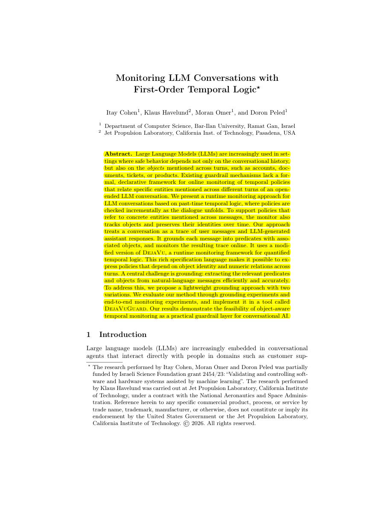
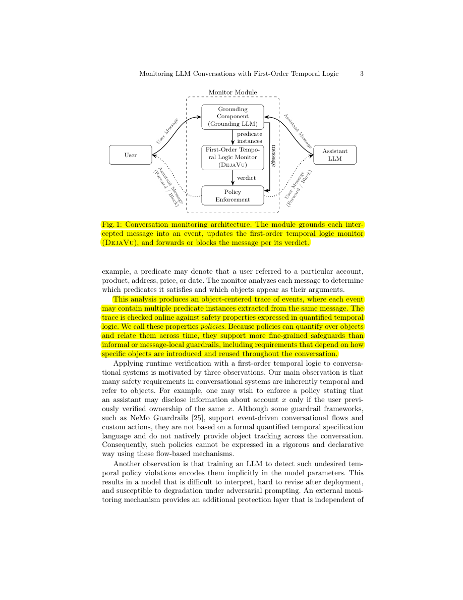

R35 · Rule and evidence algorithms
First-order temporal monitoring already supports cross-turn object binding
Monitoring LLM Conversations with First-Order Temporal Logic
Itay Cohen, Klaus Havelund, Moran Omer, Doron Peled · 2026 public author manuscript; no reliance on an unverified publication status
What the study investigates
Multiround policies often concern a particular object: for example, modifying an account only after that same account is verified. Detecting “verified” in a message is insufficient unless its object is correctly identified. This work delegates identity and temporal relationships to an external monitor.
How it was studied
A natural-language grounding module extracts predicates with object parameters. The first-order past-time monitor DejaVu maintains history and object identity and determines whether an intercepted message is forwarded or blocked. DejaVuGuard uses lightweight grounding and separately evaluates predicate/object extraction and end-to-end monitoring. Policies can include object quantification and numerical relations; cross-turn object normalization is explicit.
Findings
The authors show that object-dependent temporal policies can be executed online and evaluate both extraction and end-to-end feasibility. Symbolic monitoring is deterministic for grounded events, while natural-language extraction can still be wrong. Repeatable execution is not perfect comprehension.
Limits of the evidence
The work does not validate pharmacy teaching or OSCE assessment. It nevertheless establishes precedents for object-and-time rules, pre-delivery blocking, and LLM extraction coupled to deterministic monitoring. Drug-object binding must not be described as a previously unknown technique.
How it informs DualGraph-OSCE
The event–predicate–monitor separation is useful. Our difference is an OSCE dependency: the judgment that a learner requirement is met determines the next role authorization, while a role action actually delivered changes the requirement's grading conditions. Pharmacy events distinguish repetition, actual advice, and explicit correction. The value of those distinctions still requires the proposed four-station comparison.
Where to cite it
Related work: online execution and object binding. Method: runtime monitoring. Discussion: conditions of symbolic guarantees.
Possible manuscript wording
Object-aware first-order temporal monitoring already supports cross-turn tracking and online policy execution. DualGraph-OSCE studies normative dependencies between role intervention and learner assessment in pharmacy OSCEs.
[R35·1]This is a manuscript-specific paraphrase, not a quotation from the source. The excerpts below define what the citation supports. The proposed method and its expected benefits are not findings of the cited paper.
Source passages and precise locations
Page numbers refer to physical pages in the saved original PDF, including any repository cover sheets. Compilation page numbers are listed separately. Yellow highlighting marks the passage used for the argument.
R35-E1Abstract: object awareness, online checking, and grounding
Original PDF page 1. The highlight identifies the passage used here; consult the full original page for its context.

R35-E2Figure 1: grounding, monitoring, and forwarding or blocking
Original PDF page 3. The highlight identifies the passage used here; consult the full original page for its context.
 R35-E3
R35-E3Section 1: objects, temporal conditions, and quantified policies
Original PDF page 3. The highlight identifies the passage used here; consult the full original page for its context.
